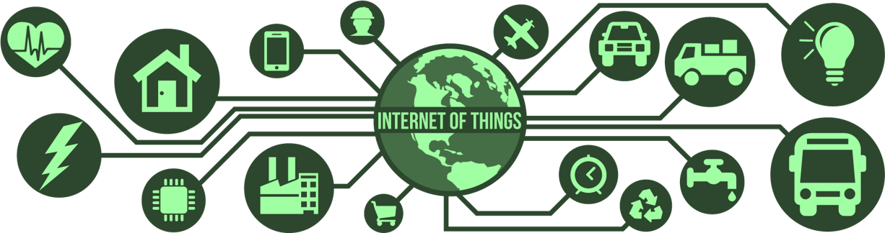

Internet de las cosas#
¿Qué es IoT?#
Internet de las cosas (IoT - Internet Of Thing) hace referencia a los dispositivos físicos u objetos que se conectan e intercambian información a través de redes de comunicación como internet. Pero las “cosas” en este contexto siempre querrán hacer referencia a objetos o dispositivos que comúnmente no están asociados con internet o algún tipo de comunicación por red. Por lo tanto, el objetivo en este campo es equipar estas “cosas” con sensores, software y tecnología de red para conectarlos, configurarlos y controlarlos, recopilando y transmitiendo datos a través, principalmente, pero no restringido, de internet.
Casi cualquier objeto puede ser susceptible de adaptarse como un dispositivo IoT, simplemente proporcionándole “inteligencia computacional” y un mecanismo para conectarse a una red. Así, objetos simples pueden potenciarse para proporcionar aplicaciones más amplias y eficientes. Alguno de los ejemplos clásicos de dispositivos IoT incluyen el refrigerador inteligente, los automóviles inteligentes y algunos dispositivos de monitoreo médico.
Es importante distinguir que los dispositivos genéricos de computación y similares no se consideran dispositivos IoT debido a su propósito. Mientras que las computadoras personales se diseñan para ser tecnologías multipropósito que pueden ejecutar diversas tareas y cómputos, los dispositivos IoT se refieren a tecnologías diseñadas con un propósito específico, equipadas con capacidad de cómputo, hardware y software enfocados en el cumplimiento de una tarea particular. Un ejemplo claro es el automóvil, que a pesar de poder integrar procesadores y sensores muy poderosos, su diseño se enfoca en cumplir una tarea muy específica: la conducción del vehículo.
IoT es un campo que ha experimentado un crecimiento exponencial en las últimas décadas, gracias a varios factores. Uno de ellos es la reducción de costos y la miniaturización de las tecnologías de cómputo, lo que facilita su integración en diferentes dispositivos. Además, el aumento en las capacidades de cómputo ha permitido que procesar información que antes representaba grandes desafíos computacionales, ahora sea posible a través de servicios en la nube, como el procesamiento de texto, imágenes o lenguaje natural. Es importante destacar acorde a lo último, que la conectividad a internet es un requisito fundamental para IoT, y la creciente cobertura y accesibilidad de internet ha desempeñado un papel clave en el desarrollo y expansión de estas tecnologías.
En el contexto mundial, la implementación de las tecnologías IoT tiene un gran potencial de transformar la forma en que las personas interactúan con el mundo físico y cómo las empresas operan y toman decisiones. Esto, porque los datos que se recopilan pueden ser analizados y utilizados para crear soluciones inteligentes y automatizadas, como la optimización de procesos de producción de una empresa, el monitoreo de la salud y el bienestar, la gestión de inventarios, la seguridad del hogar, entre otros. Sin embargo, el uso de IoT también conlleva ciertas desventajas. Por un lado, existe el riesgo de potenciar el aislamiento social, ya que la automatización y la comunicación a través de dispositivos pueden reemplazar la interacción humana cara a cara. Por otro lado, muchos procesos y actividades cotidianas se vuelven dependientes de la infraestructura de red, lo que significa que una caída en la conectividad puede tener consecuencias graves. Además, la exposición constante de información personal a través de dispositivos IoT puede poner en riesgo la privacidad y seguridad del usuario, ya que pueden ser usados para el mercadeo o incluso para cometer delitos cibernéticos.
Sistemas IoT#
Un sistema IoT puede ser clasificado como un sistema embebido con conectividad a internet. Pero, ¿qué se entiende por un sistema embebido? En términos simples, se refiere a cualquier dispositivo tecnológico de propósito específico que encapsula toda su complejidad interna, exponiendo solo una interfaz al usuario para su manipulación. Para ser más claro, se puede tomar como ejemplo una cámara fotográfica. Internamente, comprender la complejidad de su mecanismo para capturar y digitalizar una imagen puede suponer un desafío significativo. Sin embargo, desde la perspectiva del usuario, esta complejidad queda oculta, y lo único que se necesita saber para usar la cámara es cómo interactuar con los botones y otros periféricos diseñados por el fabricante. Es precisamente este uno de los enfoques de los dispositivos IoT, equipar a las cosas con mejores caracteristicas que las usuales pero sin que supongo un cambio significativo en la forma en la que la gente percibe e interactua con ellas. Este ejemplo sirve también para ilustraṙ que no todos los sistemas embebidos pueden considerarse como dispositivos IoT, como era de esperar. El factor distintivo radica en dotar al dispositivo de conectividad, idealmente, de intenet.
Estructura de un sistema IoT#
{kind=link}
Un sistema IoT involucra varias etapas o procesos, que van desde la elección e implementación del hardware a utilizar en el sistema electrónico, hasta el transporte, visualización y análisis de los datos obtenidos del sistema en software. En términos generales, se puede dividir el sistema en 3 etapas, cada una de las cuales representa una fase del desarrollo de un sistema IoT:
La primera capa es la de dispositivos y hardware, la cual implica el diseño, fabricación y configuración de todo el sistema electrónico, como sensores y actuadores, unidad de procesamiento, alimentación y la conectividad de red necesaria para enviar y recibir datos de los dispositivos.
La segunda capa es la de infraestructura y conectividad, que se enfoca en la infraestructura necesaria para admitir la comunicación y el intercambio de datos entre los dispositivos IoT y los servidores o la nube. Esta puede identificarse como el Back-End del sistema.
La tercera capa es la de aplicaciones y experiencia del usuario, la cual está relacionada con la interfaz de usuario y la experiencia que tiene el usuario final. Aquí es donde se desarrollan las aplicaciones y las interfaces que permiten a los usuarios interactuar con los dispositivos IoT y aprovechar los datos recopilados. Esta capa también se le puede identificar como el Front-End del sistema.
Es importante destacar que estas capas no son necesariamente secuenciales y pueden superponerse en ciertos casos. Además, a medida que la tecnología IoT evoluciona, surgen nuevas etapas y tecnologías. Sin embargo, esta visión proporciona una estructura básica para comprender los componentes principales de un sistema IoT.
Teconologías para IoT#
En cada etapa mencionada se emplean ciertoas tecnologías según el proposito, a continuación se trata de mencionar algunas destacadas y en particular, las que son del interes de este curso.
En la primera etapa del desarrollo de sistemas IoT, lo referente al hardware, se utiliza una combinación o arreglo de sensores y actuadores para recopilar datos del entorno y llevar a cabo acciones físicas en respuesta, los cuales son centralizados en sistema de computo como microcontroladores, microprocesadores, microcomputadors o incluso teconologías de hardware reprogramable como FPGAs (Field Programmable Gate Arrays). Algunos de los más destacados son Arduino, ESP32 o Raspberry Pi. Los datos recopilados por los dispositivos IoT deben ser trasmitidos a través de protocolos de comunicación como MQTT, CoAP o HTTP, para enviarlos a la infraestructura subyacente a tráves del algún “getaway”. Por lo tanto, en esta etapa también podrían ser necesarias tecnologías de red y comunicación como UART, SPI, Wi-Fi, Bluetooth, Zigbee, LoRaWAN, entre otras.
En la fase de infraestructura y conectividad, se emplean diversas tecnologías para lograr una comunicación eficiente y un intercambio fluido de datos entre los dispositivos IoT y la nube. En este punto se pueden establecer servidores que integran diversidad de servios que permite gestionar de manera eficiente y escalable grandes volúmenes de información. Para este proposito, en esta etapa que representa el Back-end del sistema IoT, se emplean teconologías como Python, JavaScript, PhP, entre otras. Algunos de los servicios existentes que pueden ser integrados abarcan plataformas en la nube como AWS IoT, Google Cloud IoT o Microsoft Azure IoT, que ofrecen servicios de almacenamiento, procesamiento y análisis de datos. El Back-end, como mediador entre los dispotivos, la nube y el usuario, se encarga también de la conexión a las bases de datos y del despliege de WEB APIs. Para el almacenamiento, se cuenta con una gran diversidad de teconologías de bases, particularmente para este curso, será de interes MongoDB. Para la creación de las APIs, se puede contar con herramientas como Flask, FastAPI, o Django si se habla de Python.
En la etapa de Aplicaciones y Experiencia del Usuario en los sistemas IoT, el objetivo es mejorar la interacción y experiencia del usuario. Se pueden desarrollar aplicaciones móviles y web para que los usuarios puedan interactuar con los dispositivos IoT y acceder a los datos en tiempo real. En esta fase, se utilizan tecnologías como Python, JavaScript, o incluso Jupyter.
Note
Un aspecto de suma importancia que se ha pasado por algo en los sistemas IoT descritos, es el tema de la seguridad, que es un aspecto crítico. se deben implementar medidas para proteger los datos y dispositivos de posibles ataques. Estas medidas pueden incluir la autenticación y autorización de usuarios, el cifrado de datos, el control de acceso y la segmentación de redes. Se pueden utilizar protocolos de seguridad como TLS y SSH para cifrar las comunicaciones y proteger los datos de IoT. Sin embargo, este tema se encuentra fuera del alcance de este curso.
De lo visto, la tecnología subyacente a conocer para embarcarse en IoT incluye la programación y adaptación de hardware, la conectividad de red, la computación en la nube, la inteligencia artificial y la analítica de datos. Por lo tanto, en adelante, encontrará material que le permitirá adquirir los conocimientos básicos para el desarrollo de sistemas IoT simples utilizando algunas de las tecnologías mencionadas, como Arduino, Raspberry Pi, MongoDB, Python y JavaScript.